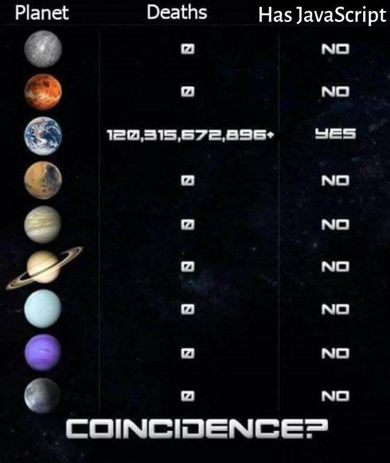

00. Link - Why I Write CSS in JavaScript
01. Link - Longest keyword sequence in JS
02. Link - Cache-Control for Civilians
03. Link - W3C approves WebAuthn as the web standard for password-free logins
04. Link - Use Docker to Create a Node Development Environment
05. Link - An NLP library for building bots
06. Link - Executing arrays of async/await JavaScript functions in series vs. concurrently
07. Link - What the Functor?
08. Link - JavaScript Symbols: But Why?
09. Link - JavaScript Performance Pitfalls in V8
10. Link - PCjs Machines
11. Link - GOTO 2018 • Why I Was Wrong About TypeScript • TJ VanToll
